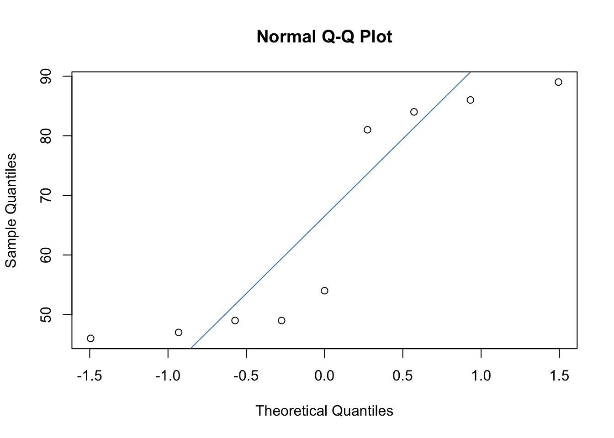
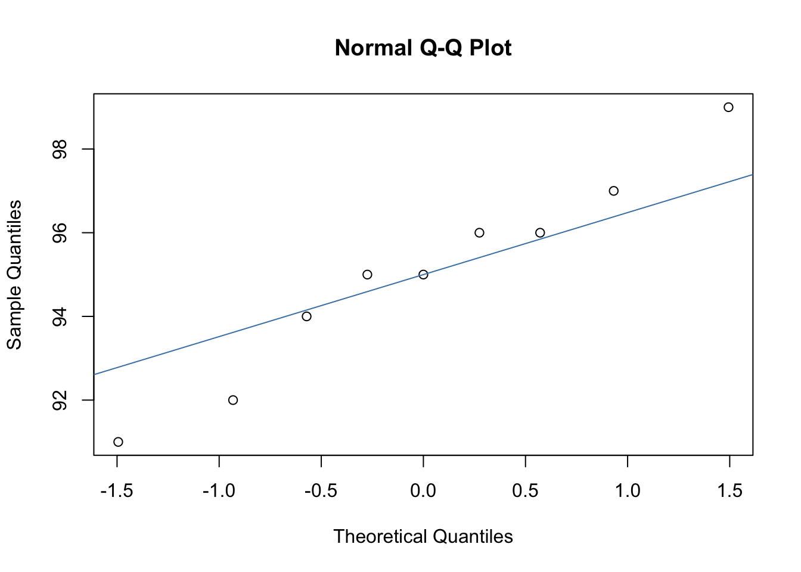
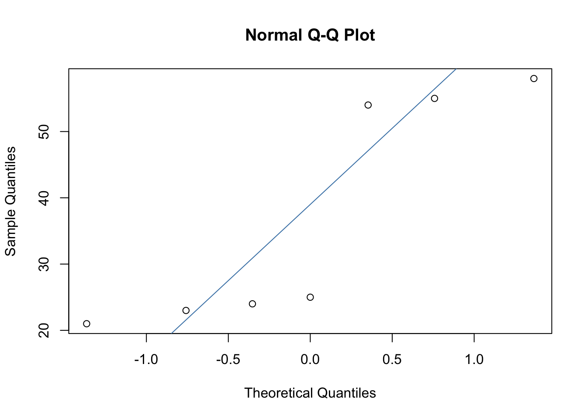
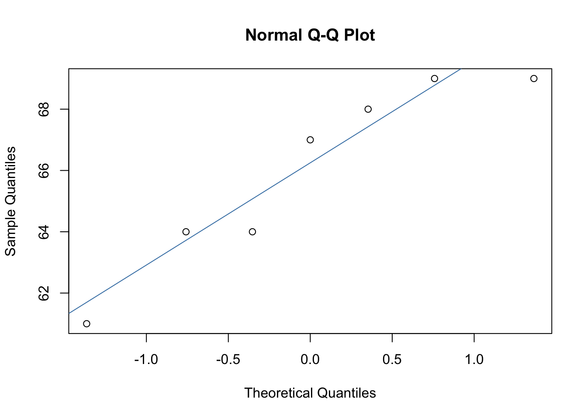
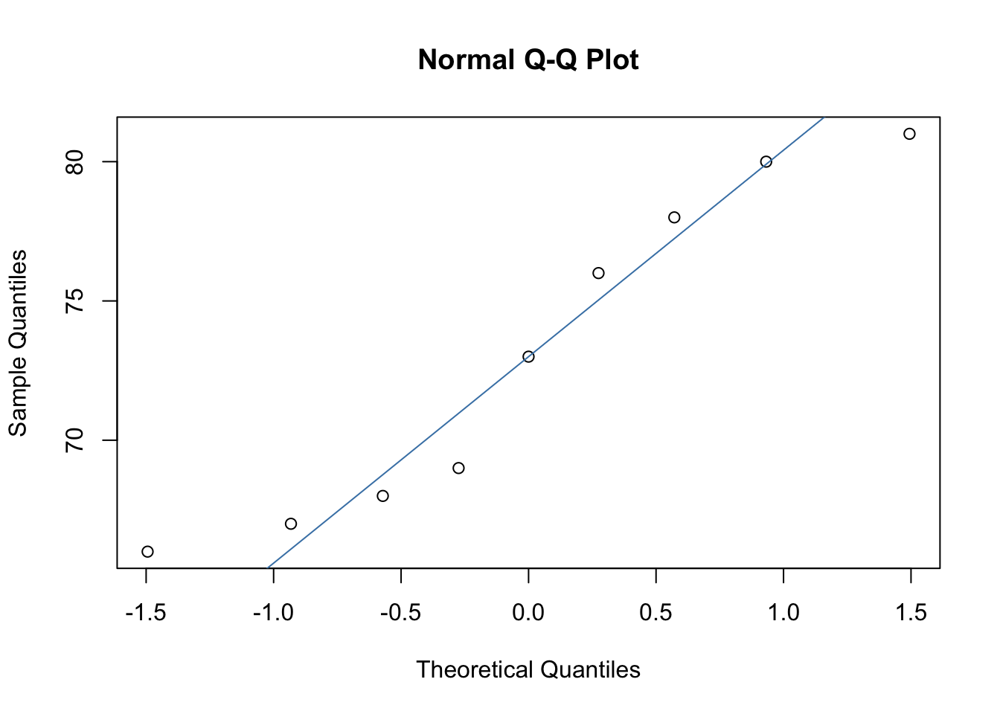

4 Lecture 7 (Non-parametric tests: Kruskal-Wallis test and Friedman’s ANOVA)
4.1 Lecture
This lecture comprises two parts:
Part 1: Assessing normality with three or more independent groups and the Kruskal-Wallis test
Part 1 covers how to assess the assumption of normality with three or more independent groups. It also covers the theory behind the Kruskal-Wallis test, how to calculate the Kruskal-Wallis test statistic manually, how to run the test in R, how to interpret the output, and how to conduct post-hoc comparisons. The lecture recording is available here and the slides are available here.
Part 2: Assessing normality with three or more repeated measures and Friedman’s ANOVA
Part 2 covers how to assess the assumption of normality with three or more repeated measures. It also covers Friedman’s ANOVA, including: the theory behind the test, how to calculate the test statistic manually, how to run the test in R and how to interpret output, and how to conduct post-hoc comparisons. The lecture recording is available here and the slides are available here.
4.2 Pre-lab work
Before the lab, please watch the following video. This walks you through how to perform Friedman’s ANOVA in R.Please also take a look at this R markdown file. This covers how to run a Kruskal-Wallis test and Friedman’s ANOVA in R.
4.3 Lab
In the lab, we’ll practice running a Kruskal-Wallis test and Friedman’s ANOVA in R. Please download the following zip file which contains two datasets: course_data_set.csv and memory_data.csv.
The datasets relate to the following research questions:
1. Course dataset
You are a psychology lecturer. You hear that the library is offering three statistics courses. You are interested in whether students who attend the courses perform significantly differently from each other.
You recruit 18 people and assign each one to a course. After the courses are finished, you ask them to write an R script. You time how long it takes students to complete the task. You are interested in whether there is a significant effect of course on the time taken to complete the task.
2. Memory dataset
You are a developmental psychologist. You are interested in whether working memory develops between 15 and 17 years of age.
You recruit a sample of adolescents and test them on a working memory task when they are 15 years of age, 16 years of age, and 17 years of age.
You then examine whether there is a significant effect of age on working memory score.
4.3.1 Model script
Here is a model script that produces the answers to the above research questions. I use the word ‘model’ loosely, as you may have used different functions you’ve learned over the last two years (and that’s absolutely fine!). So don’t worry if you haven’t used the exact same functions as me. You should end up with the same results and interpretation at the end though.
4.3.2 Feedback on scripts
Feedback on R scripts submitted by students is available here.
4.4 Independent learning
This is optional, but recommended. The answers are found below.
4.4.1 Activity 1
Understanding how the non-parametric tests differ and when to use them
It is really important that you understand which statistical test you should run in different situations. This activity will test your knowledge of the statistical tests you learned during this lecture and {#wilcoxon-rank-sum-signed-rank}.
In each of the following scenario, you are interested in whether the type of chocolate eaten affects feelings of contentment (response = 0-100). For each scenario, think about the following questions:
Scenario 1: You recruit 20 participants. On day 1, they eat milk chocolate. On day 2, they eat dark chocolate. On day 3, they eat white chocolate.
How would you check whether the assumption of normality is violated for this design?
If the assumption of normality is violated, which non-parametric test would you run?
Scenario 2: You recruit 12 participants and randomly assign them to either a “white chocolate”, “milk chocolate”, or “dark chocolate” group.
How would you check whether the assumption of normality is violated for this design?
If the assumption of normality is violated, which non-parametric test would you run?
Scenario 3: You recruit 7 participants. On day 1, they eat milk chocolate and on day 2, they eat dark chocolate.
How would you check whether the assumption of normality is violated for this design?
If the assumption of normality is violated, which non-parametric test would you run?
Scenario 4: You recruit 10 participants and randomly assign them to either a “white chocolate” or “milk chocolate” group.
How would you check whether the assumption of normality is violated for this design?
If the assumption of normality is violated, which non-parametric test would you run?
4.4.2 Activity 2
Interpreting R output
Interpret the following R output. Part 1 uses an independent groups design, whilst part 2 uses a repeated measures design.
4.4.2.1 Part 1: An independent groups design
You are a developmental researcher interested in whether the books children are exposed to affects their language production (how many words they can say). You recruit 21 2-year-old children and assign them to one of three groups – “Pinocchio”, “Cinderella”, and “Gruffalo”. The children’s parents then read this story every day for three months (i.e. children in the “Gruffalo” group read the Gruffalo every day). You then ask their parents to complete a language production assessment on their child (score = 0-100).
4.4.2.1.1 Testing the assumption of normality:
4.4.2.1.1.1 Group 1:

##
## Shapiro-Wilk normality test
##
## data: Pinocchio$Words
## W = 0.75208, p-value = 0.01334
4.4.2.1.2 Interpret the descriptive statistics and the model output
## # A tibble: 3 × 4
## Book med_words min_words max_words
## <chr> <int> <int> <int>
## 1 Cinderella 16 12 18
## 2 Gruffalo 67 61 69
## 3 Pinocchio 25 21 58##
## Kruskal-Wallis rank sum test
##
## data: Words by Book
## Kruskal-Wallis chi-squared = 17.853, df = 2, p-value = 0.0001328## Warning: Book was coerced to a factor.## Dunn (1964) Kruskal-Wallis multiple comparison## p-values adjusted with the Holm method.## Comparison Z P.unadj P.adj
## 1 Cinderella - Gruffalo -4.225276 0.00002386477 0.00007159432
## 2 Cinderella - Pinocchio -2.112638 0.03463174827 0.06926349653
## 3 Gruffalo - Pinocchio 2.112638 0.03463174827 0.03463174827What can we conclude? Report in APA format.
4.4.2.2 Part 2: A repeated measures design
You are a researcher interested in whether the number of hours sleep individuals get affects their performance on an attention task (score = 0-100). You recruit nine participants, with all participants taking part in three conditions. In the first condition, participants get 6 hours sleep the night before (6 hours). In the second condition, they get 8 hours sleep the night before (8 hours), and in the third condition, they get 10 hours sleep the night before (10 hours).
4.4.2.2.1 Testing the assumption of normality:
6 hours condition:

##
## Shapiro-Wilk normality test
##
## data: sleep_data$six_hours
## W = 0.7785, p-value = 0.011578 hours condition:

##
## Shapiro-Wilk normality test
##
## data: sleep_data$eight_hours
## W = 0.90246, p-value = 0.266610 hours condition:

##
## Shapiro-Wilk normality test
##
## data: sleep_data$ten_hours
## W = 0.96963, p-value = 0.8915Is the assumption violated?
4.4.2.2.2 Interpret the descriptive statistics and the model output
## Participant Condition Score
## 1 1 six_hours 46
## 2 2 six_hours 47
## 3 3 six_hours 49
## 4 4 six_hours 54
## 5 5 six_hours 89
## 6 6 six_hours 86
## 7 7 six_hours 84
## 8 8 six_hours 81
## 9 9 six_hours 49
## 10 1 eight_hours 66
## 11 2 eight_hours 68
## 12 3 eight_hours 69
## 13 4 eight_hours 73
## 14 5 eight_hours 76
## 15 6 eight_hours 78
## 16 7 eight_hours 67
## 17 8 eight_hours 80
## 18 9 eight_hours 81
## 19 1 ten_hours 96
## 20 2 ten_hours 97
## 21 3 ten_hours 95
## 22 4 ten_hours 96
## 23 5 ten_hours 94
## 24 6 ten_hours 92
## 25 7 ten_hours 91
## 26 8 ten_hours 95
## 27 9 ten_hours 99##
## Friedman rank sum test
##
## data: as.matrix(sleep_data_reduced)
## Friedman chi-squared = 13.556, df = 2, p-value = 0.001139##
## Pairwise comparisons using Conover's all-pairs test for a two-way balanced complete block design## data: y, groups and blocks## eight_hours six_hours
## six_hours 0.817 -
## ten_hours 0.015 0.014##
## P value adjustment method: holm## med_six_hours med_eight_hours med_ten_hours min_six_hours min_eight_hours min_ten_hours max_six_hours max_eight_hours
## 1 54 73 95 46 66 91 89 81
## max_ten_hours
## 1 99What can we conclude? Report in APA format.
4.4.3 Activity 1: Answers
Scenario 1: You recruit 20 participants. On day 1, they eat milk chocolate. On day 2, they eat dark chocolate. On day 3, they eat white chocolate.
- How would you check whether the assumption of normality is violated for this design?
Assess whether the assumption of normality is violated per condition. This can be done using Q-Q plots and the Shapiro-Wilk test
- If the assumption of normality is violated, which non-parametric test would you run?
Friedman’s ANOVA
Scenario 2: You recruit 12 participants and randomly assign them to either a “white chocolate”, “milk chocolate”, or “dark chocolate” group.
- How would you check whether the assumption of normality is violated for this design?
Assess whether the assumption of normality is violated per group. This can be done using Q-Q plots and the Shapiro-Wilk test.
- If the assumption of normality is violated, which non-parametric test would you run?
Kruskal-Wallis test
Scenario 3: You recruit 7 participants. On day 1, they eat milk chocolate and on day 2, they eat dark chocolate.
- How would you check whether the assumption of normality is violated for this design?
Calculate a difference score for each participant (Timepoint 1 – Timepoint 2). Assess whether the assumption of normality is violated for the “difference”. This can be done using Q-Q plots and the Shapiro-Wilk test.
- If the assumption of normality is violated, which non-parametric test would you run?
Wilcoxon signed-rank test
Scenario 4: You recruit 10 participants and randomly assign them to either a “white chocolate” or “milk chocolate” group.
- How would you check whether the assumption of normality is violated for this design?
Assess whether the assumption of normality is violated per group. This can be done using Q-Q plots and the Shapiro-Wilk test
- If the assumption of normality is violated, which non-parametric test would you run?
Wilcoxon rank-sum test
4.4.4 Activity 2: Answers
4.4.4.1 Part 1: An independent groups design
4.4.4.1.1 Testing the assumption of normality:
4.4.4.1.1.1 Group 1:

##
## Shapiro-Wilk normality test
##
## data: Pinocchio$Words
## W = 0.75208, p-value = 0.013344.4.4.1.1.2 Group 2:

##
## Shapiro-Wilk normality test
##
## data: Cinderella$Words
## W = 0.96705, p-value = 0.87644.4.4.1.1.3 Group 3:

##
## Shapiro-Wilk normality test
##
## data: Gruffalo$Words
## W = 0.89119, p-value = 0.2809Is the assumption violated?
The Q-Q plot and the Shapiro-Wilk test suggests that the assumption of normality is violated for the Pinocchio group. Data in the Cinderella and Gruffalo group does not appear to violate the assumption.
4.4.4.1.2 Interpret the descriptive statistics and the model output
## # A tibble: 3 × 4
## Book med_words min_words max_words
## <chr> <int> <int> <int>
## 1 Cinderella 16 12 18
## 2 Gruffalo 67 61 69
## 3 Pinocchio 25 21 58##
## Kruskal-Wallis rank sum test
##
## data: Words by Book
## Kruskal-Wallis chi-squared = 17.853, df = 2, p-value = 0.0001328## Warning: Book was coerced to a factor.## Dunn (1964) Kruskal-Wallis multiple comparison## p-values adjusted with the Holm method.## Comparison Z P.unadj P.adj
## 1 Cinderella - Gruffalo -4.225276 0.00002386477 0.00007159432
## 2 Cinderella - Pinocchio -2.112638 0.03463174827 0.06926349653
## 3 Gruffalo - Pinocchio 2.112638 0.03463174827 0.03463174827What can we conclude? Report in APA format.
The Kruskal-Wallis test revealed a significant effect of book on the language production score, H(2) = 17.85, p < .001. Post-hoc comparisons were conducted using Dunn’s test, with p-values corrected using Bonferroni-Holm. There was a significant difference between the Cinderella (median = 16; range = 12-18) and the Gruffalo groups (median = 67; range = 61-69), with participants in the Gruffalo group achieving a significantly higher score (p < .001). Participants in the Gruffalo group also achieved a significantly higher score than participants in the Pinocchio group (median = 25; range = 21-58; p = .035). No significant difference was observed between the Cinderella and the Pinocchio groups (p = .069).
4.4.4.2 Part 2: A repeated measures design
4.4.4.2.1 Testing the assumption of normality:
6 hours condition:

##
## Shapiro-Wilk normality test
##
## data: sleep_data$six_hours
## W = 0.7785, p-value = 0.011578 hours condition:

##
## Shapiro-Wilk normality test
##
## data: sleep_data$eight_hours
## W = 0.90246, p-value = 0.266610 hours condition:
##
## Shapiro-Wilk normality test
##
## data: sleep_data$ten_hours
## W = 0.96963, p-value = 0.8915Is the assumption violated?
Data in the 6 hour condition appears to violate the assumption of normality.
4.4.4.2.2 Interpret the descriptive statistics and the model output
##
## Friedman rank sum test
##
## data: as.matrix(sleep_data_reduced)
## Friedman chi-squared = 13.556, df = 2, p-value = 0.001139##
## Pairwise comparisons using Conover's all-pairs test for a two-way balanced complete block design## data: y, groups and blocks## eight_hours six_hours
## six_hours 0.817 -
## ten_hours 0.015 0.014##
## P value adjustment method: holm## med_six_hours med_eight_hours med_ten_hours min_six_hours min_eight_hours min_ten_hours max_six_hours max_eight_hours
## 1 54 73 95 46 66 91 89 81
## max_ten_hours
## 1 99What can we conclude? Report in APA format.
A Friedman’s ANOVA revealed a significantly effect of sleep hours on the attention score, \(x^{2}_{F}\)(2) = 13.56, p = .001. Post-hoc comparisons were then conducting using the Conover test, with p-values corrected using Bonferroni-Holm. A significant difference emerged between the 6 hour (median = 54; range = 46-89) and the 10 hour conditions (median = 95; range = 91-99; p =.014), with participants performing better in the 10 hour condition. There was also a significant difference between the 8 hour (median = 73; range = 66-81) and the 10 hour conditions (p = .015). No significant difference emerged between the 6 hour and 8 hour conditions (p = .817).